Table of Contents
Flight Computer PCB Development
Programming the Flight Computer with AVR C
Introduction
While browsing YouTube one day, I came across a channel called BPS.Space.
At the time (the channel does many rocket-things now), it was about building model rockets which could stabilize themselves using Thrust Vector Control (TVC).
Thrust Vectoring is when a vehicle (like a rocket or plane) manipulates the direction of its thrust to change its direction and angular velocity.
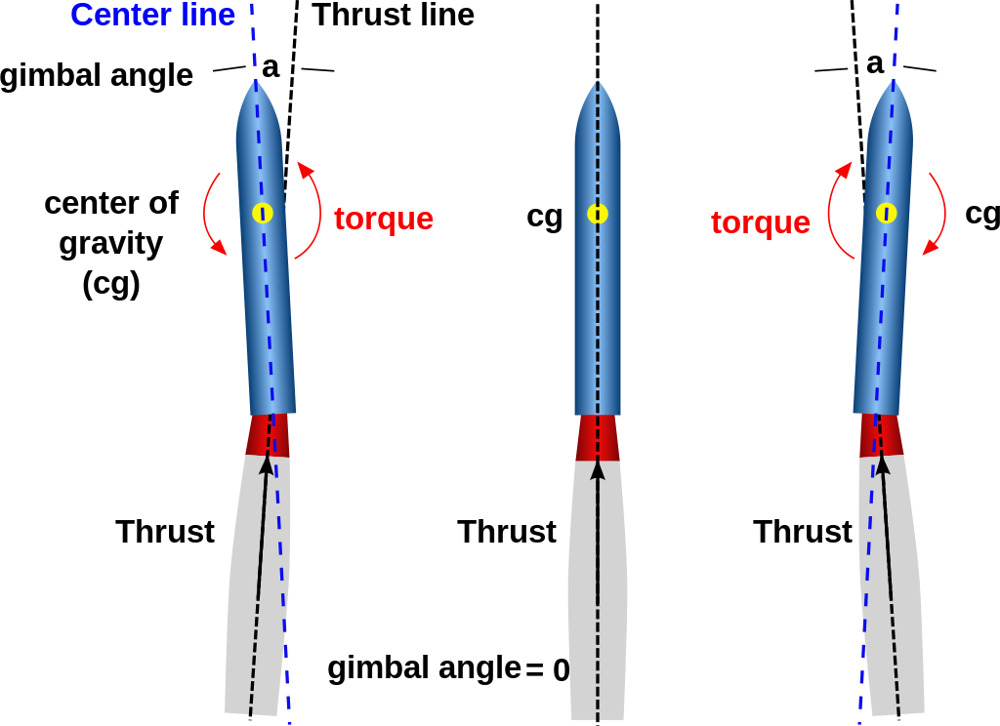The channel inspired me to build my own TVC rocket. This page is a documentation of my progress, as well as why and how I do things on this project. I will update it periodically.
Engine Mount Development
(February 4th, 2023)
As of now, I nearly have a fully finished (prototype) version of the engine mount. The servos are not yet connected, and part of the arm is broken. I plan to finish and test it soon.
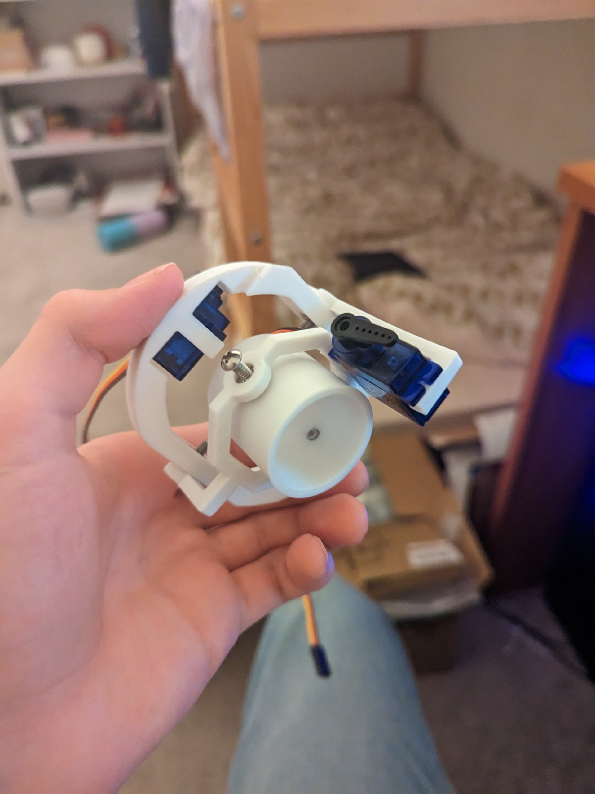So far, every 3D printed part of this rocket has been designed in Tinkercad. Though maybe not the most professional option, it does everything I need it to do efficiently, conveniently, and for free. All the parts are printed on my Creality Ender 3 Pro:
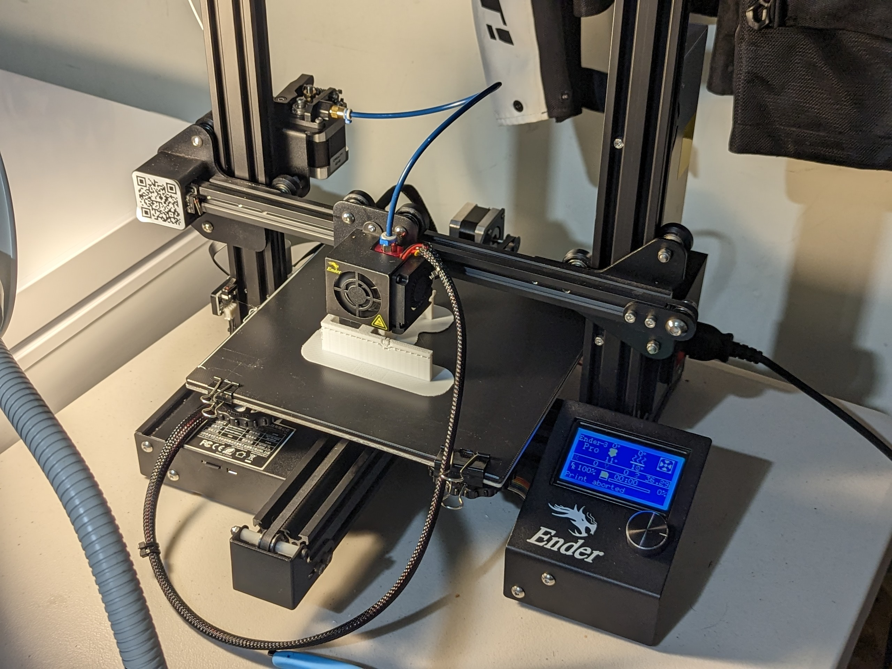When I had first started designing, I planned to design everything separately, and so I began with the main ring that would be connected to the body tube:
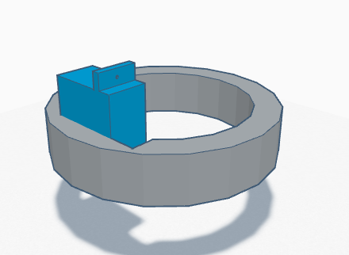At the time, I had not used much CAD, so it was very rough. After printing it I quickly realised I couldn't even fit a screwdriver to mount the servo. Some versions of just the ring later, I "got distracted" by other projects. But through those, like from this fully automatic rubber band gun with removable magazines:
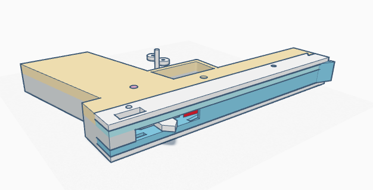I gained a lot of design experience. After finding a datasheet with the servo dimensions, I was able to design a new version fairly quick and without much trouble. despite the unusual round space constraints of the rocket body. (The green arm is actually not its first iteration. It used to be mounted on only one side, which would bend under pressure).
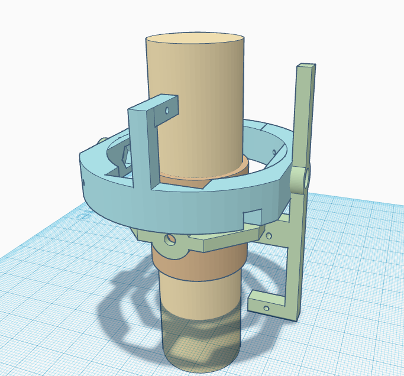The small darker brown ring in the center will hold the 29mm Estes motor I plan to use (represented as the tan cylinder). The motor can either be glued into the ring, friction fitted by increasing its radius with electrical tape, compressed from the side by further tightening the screws holding the ring, or a combination of these methods. The ring is small so it can be thrown away (if the motor is glued in) and reprinted quickly. The servo on the arm would be connected with a rod to the brown ring, and the servo on the bigger ring to the arm, making for X and Y rotation.
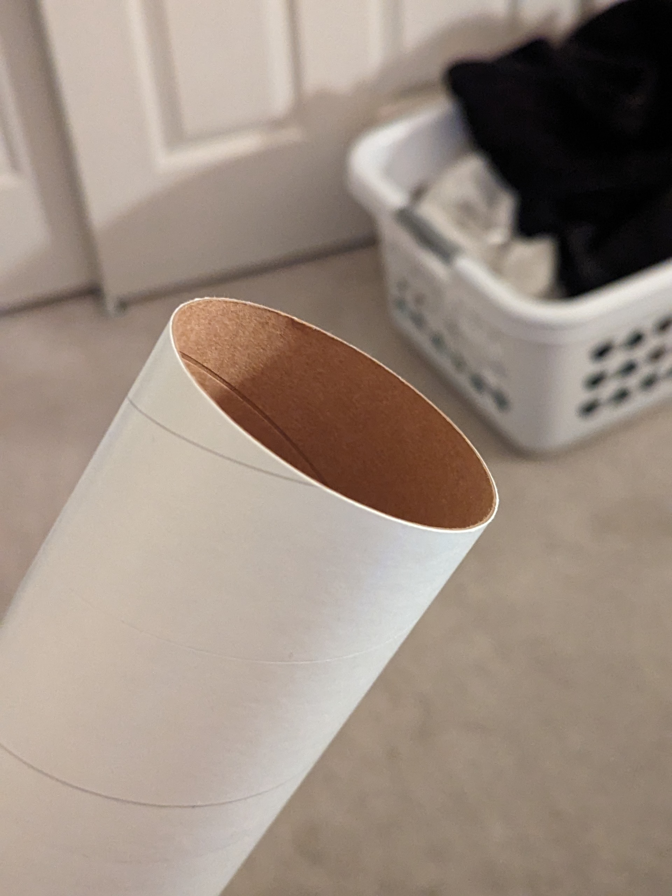The part connection mechanism is pretty simple but neat. A nut is inserted into a slot (that is not the full depth of the part) and then you essentially achieve a threaded hole which is much stronger and more precise (higher resolution) than could be 3D printed. You can then screw in a screw. (Not my idea, I found it on some forum a while back.)
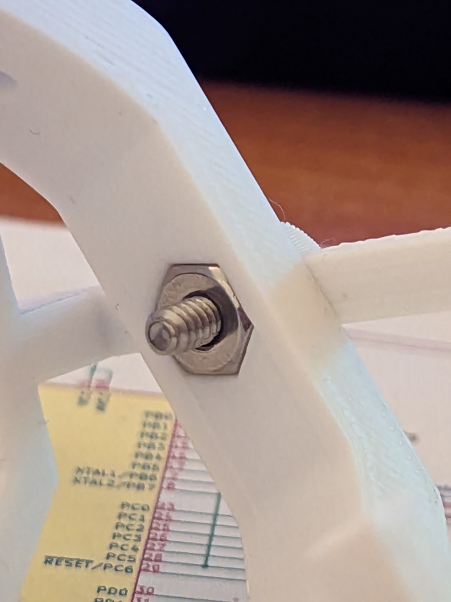The plastic parts will be connected to the servos using stiff metal wire shaped into arms.
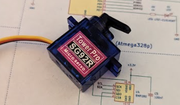Unfortunately, my printer was not cooperating, and it would take many attempts to print everything. Eventually (after much trouble shooting, changing the bowden tube, and fixing other under extrusion issues) I had everything printed, except for the green arm. Not only would this part fail multiple times half way through, but I kept breaking it while taking off supports.
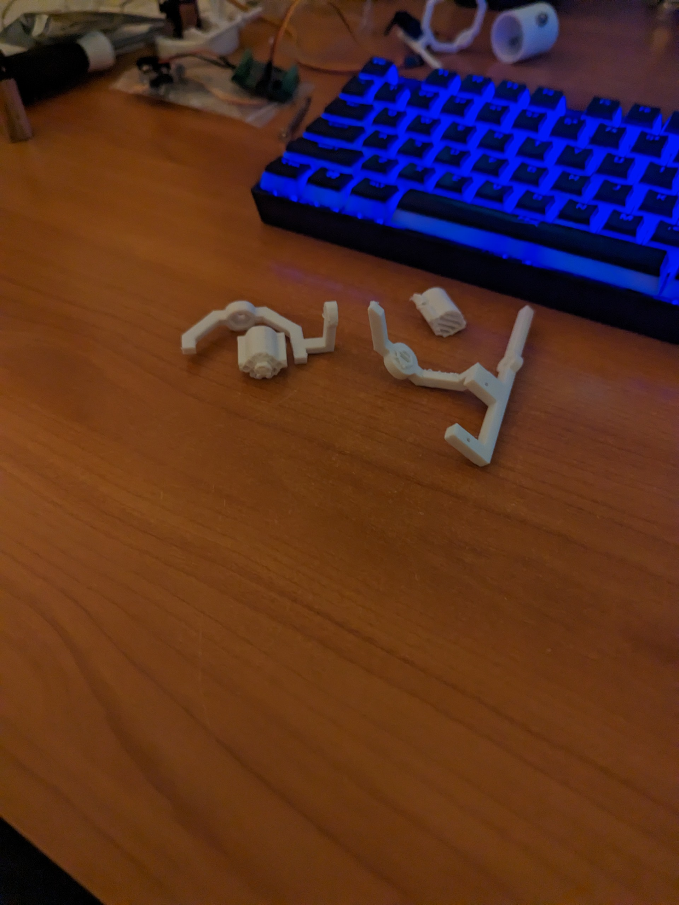 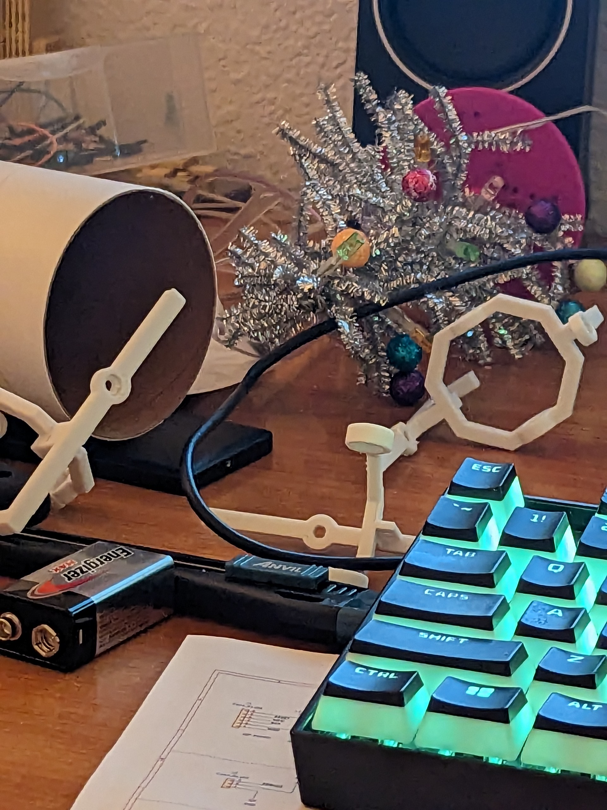After some trial and error, I eventually got an intact one, but ignorantly over tightened one of the screws, and tore through the plastic:
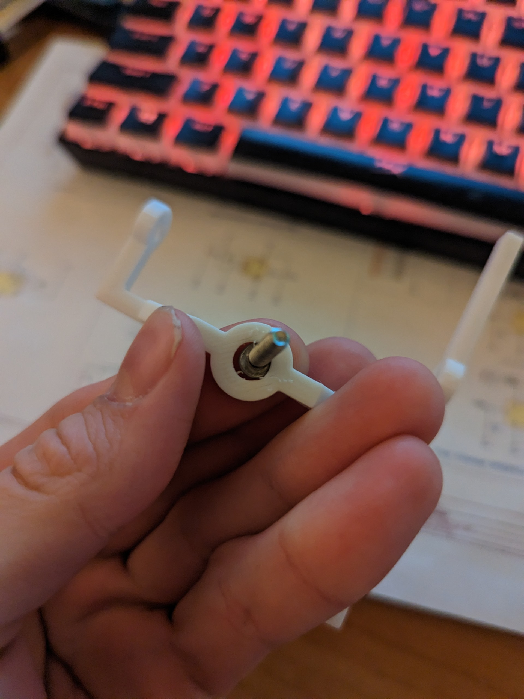This is where I'm at with the mount at the moment (the over tightened arm is actually the one used in the first picture where it's assembled, because it still works, just not ideally). The next step would be to reprint the arm, put all three pieces together, and test its motion with a lit engine and my flight computer at the helm.